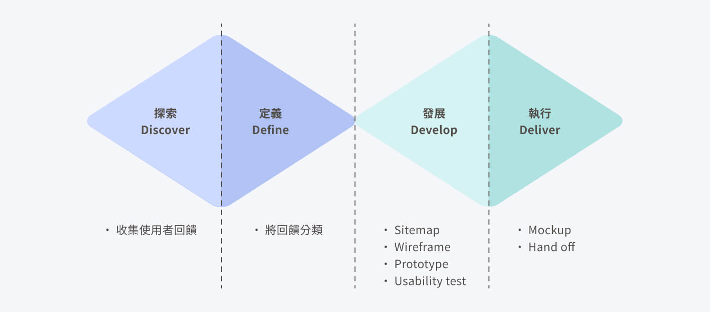

HelloI’m Ripple.
在數位設計的領域有將近 10 年的經驗，
擅長 UI/UX、網頁設計、動態設計。
七月 2020 - 二月 2023
Cr.ED：廣告創意管理 SaaS 平台
重新設計介面、優化功能，以提升使用體驗，並導入 Design System 統一視覺風格。
八月 2022 - 二月 2023
行動廣告版位發想與設計
發想創意版位內容，並結合網頁動態效果，打造吸睛的廣告版位。在這個專案也導入了 Lottie 動畫的技術，確保廣告的動畫品質。
八月 2021 - 十月 2021
廣告規範網站建立與管理
將過去簡報中的龐大資訊重新規劃架構並製作 RWD 網站呈現，是一個從 0 到 1 的專案。同時，依照 CSS 程式碼重新繪製規範圖，並導入 Figma 管理六百多張的圖檔。
網頁設計
KOKO簽帳金融卡 - 生活大富翁
國泰世華
年度 Roadshow 網站
Ad2iction 艾迪英特
生命之織 - 女性癌友的影像姿態
南山人壽
野蠻遊戲：瘋狂叢林活動網站
索尼影業
動態設計
繃繃精華上市宣傳
未來美
聖誕節新版位宣傳
Ad2iction 艾迪英特
PUMA Velocity Nitro
PUMA
中華電信 Hami Video
中華電信
Cr.ED：廣告創意管理 SaaS 平台
專案期間
七月 2020 - 二月 2023
擔任角色
UI/UX Designer
服務公司
Ad2iction 艾迪英特
01 | 專案目標
初期為公司內部使用之廣告管理工具，後期公司決定轉為以對外販售為目標，因此希望能統一介面視覺風格並提升產品易用性，以增加使用者對產品的信任度。
02 | 角色與產出
在這個專案中，我與產品經理、一位前端以及兩位後端有著密切的合作。我負責整個產品的 UI 設計、Design System 的建構與維護、Wireframe、Prototype 的製作以及簡單的易用性測試，一直到最後整理規格並交付給工程師。
03 | 專案挑戰
當原本程式結構複雜且難以輕易改動時，如何以最小幅度的調整來滿足使用者需求，對團隊來說是一大挑戰。此外，公司以前在產品開發方面較不重視 UX，因此如何說服團隊導入 UX 流程，對我來說也是一大挑戰。
04 | 專案成果與影響
這次的改版明顯地減少廣告上稿和收集數據報表所需的時間，增加了生產力和效率。另外，也從內部使用者身上獲得了許多正面的回饋。
專案背景
Cr.ED 是一個創意管理 SaaS 平台，藉由上傳設計素材，透過簡易的步驟設定一鍵產出具創意、互動性的數位廣告，即可投放至 Google、TTD、Verizon⋯⋯等 DSP 平台，並提供綜合數據報表讓使用者更了解成效。使用者不必具備程式背景，只需要專注於創意工作上，大幅縮短了開發時程，同時提高了效率。
然而，初期的 Cr.ED 是為了協助公司內部數位行銷人員而開發的工具，因此在介面設計上，即使內部使用者反應上稿的操作體驗不佳，也始終沒有投入人力去調整。直到 2020 年，公司決定以對外販售 Cr.ED 為目標後，才成立 Cr.ED 團隊來進行優化，希望能改善使用者體驗。
專案目標
- 在加入 Cr.ED 團隊之前，Logo 與主視覺的部分已由其他視覺設計師完成，而公司希望後台介面也能與品牌形象統一，以提升使用者對產品的信任度。
- 希望透過優化介面設計、增強功能性等方式，提高產品的易用性，讓使用者更輕鬆地使用 Cr.ED，並且減少因為操作不熟練而導致的錯誤。
設計流程
首先，為了達成上述的第一個專案目標，我向團隊建議導入 Design System，透過建構 Design System 和 Guideline 制定，讓介面視覺體驗更一致，也獲得工程師們的認同。同時也透過版本號記錄來管理，有助於之後參與的設計人員迅速掌握狀況。


接著，再運用雙鑽石模型（Double Diamond）的設計思考流程，分為探索（Discover）、定義（Define）、發展（Develop）、執行（Deliver）。
探索
由於之前的使用者都是公司內部的數位行銷人員，我和產品經理決定詢問並收集有使用過 Cr.ED 平台的同仁們的意見。透過這個過程，我們期望了解產品目前所遇到的痛點和使用者的需求。
定義
在討論初期，我發現因為部分成員並未一開始就參與開發，加上又缺乏開發文件，就導致溝通上出現了資訊落差，於是我繪製了 Sitemap，讓團隊成員都能了解目前的產品架構，一起討論可變動的幅度。
接著，我們將上述探索研究中收集到的使用者回饋逐項列出並分類後，發現使用者最常提及的問題：
- 原有的 UI 設計過於陽春，不符合對外販售產品的應有形象。
- 在建立新的廣告模組時，無法預期選擇後的效果。
- 上稿頁面的學習曲線較高：
- 在上稿時，無法即時預覽輸入的數值效果。
- 上稿表單容易因為上傳序列圖檔的關係，導致頁面過長、易讀性不佳，使用者無法一眼就看到還有哪個部分尚未完成。
- 製作報表的效率不佳，因為需要逐一進入每個檔案中下載數據，非常耗時。
我們可以發現大多數使用者對於 Cr.ED 的上稿介面體驗非常不理想，但由於原本的程式結構複雜，若要增加大多數人想要的即時預覽功能，需要大幅度調整結構，會花費大量時間和人力成本。因此，在有限的開發資源下，團隊決定先以最小程度的調整來改善上稿頁面，然後再將統一介面視覺和其他頁面的小功能優化作為最小可行產品（MVP）。
發展
因為原有程式結構複雜的關係，所以我會先出 Wireframe 或 Low-fidelity prototype 與團隊討論執行上的可能性。
當設計與原先介面操作有較大落差時，我會製作 High-fidelity prototype 並邀請有使用平台經驗的同仁進行簡單的易用性測試。
- 廣告列表頁：為了讓表格能夠容納更多的資訊，同時考慮到未來資訊欄位可能會增加的情況，我嘗試採用了可以左右拖曳的設計。在測試中，我發現使用者雖然一開始可能不習慣這種操作方式，但是很快就學會了如何使用。同時，也發現 Actions 的按鈕樣式太過相似導致辨識度不佳，使用者無法輕易選擇要執行的動作，最後我透過調整按鈕配色來改善這個問題。
▲ Actions 的按鈕樣式太相似，辨識度不佳
▲ 調整按鈕配色，提升辨識度
執行
當易用性測試確認沒問題後，我便會在 Figma 上標註 Spec 與元件的各種狀態交付給工程師。
設計產出
- 更友善的 RWD 設計原本的介面在視窗寬度變窄時，廣告標題會被擠壓到不易閱讀，優化後將標題設定為一定的寬度，其他資訊則可以透過左右拖曳瀏覽。
- 更直覺的版位選擇原本的介面設計無法看出每個選項之間的差異，優化後提供了影片預覽與篩選器的功能，讓初次操作的使用者能快速找到符合自己需求的版位，減少在選擇時的不確定感，更符合安全探索的原則。
- 更方便瀏覽的上稿頁面原本的上稿頁面容易因為選項過多、序列圖檔以垂直排列而顯得冗長，在有限的時間與資源下，決定小幅度地調整，例如：將序列圖檔改成左右排列，再利用 Accordion 和標題分區的方式來提高上稿頁面的易讀性，讓資訊閱讀起來更清楚。
- 更有效率的下載數據透過在每個項目加上 Checkbox 和客製化的條件篩選功能，可以更快速地下載相關數據，縮短報表製作時間。同時也將 Line Chart 變成兩條數據折線，幫助使用者可以更好的分析數據。

▲ Before：視窗寬度在理想狀態時

▲ Before：視窗寬度變窄時，標題被擠壓不易閱讀
▲ After：視窗寬度在理想狀態時
▲ After：視窗寬度變窄時，出現左右拖曳
▲ Before：無法一眼看出各選項之間的差異
▲ After：提供示意影片與篩選器的功能，能更了解各版位的特色
▲ Before：表單非常冗長、不易閱讀
▲ After：利用 Accordion、標題分區、左右排列的方式來進行改善
▲ Before：原本的介面設計需要逐一進入每個檔案中下載數據，折線圖也沒有太大的意義
▲ After：增加 Checkbox 的功能幫助一鍵下載，同時增加折線圖的選項，讓數據呈現更有意義
專案成果
廣告上稿時間減少
50%
製作報表的時間減少
66.67%
透過減少廣告上稿和收集數據報表所需要花費的時間，可以增加生產力和效率，並且節省時間和成本，提升公司的競爭力。
反思與學習
相較於之前參與的短期活動專案，我發現在開發產品時需要考量的面向更多。例如，我必須思考如何處理多語系的問題，以及如何讓產品設計在不同文化背景下也能易於操作且不會有疑惑的情況發生。此外，我還需要考慮如何設計具有延展性和易於維護的 Component 變數，以提高產品的彈性。
在這個專案中，我也深刻認識到 UX 研究在產品開發過程中的重要性。雖然團隊規模小，只能從簡單的易用性測試做起，但也能發現使用者的行為往往和我們預想的不同。
從發現痛點到解決使用者長期以來的困擾，這個過程不僅讓我感到非常有成就感，也讓我更加確定了自己未來的職涯方向。
行動廣告版位發想與設計
專案期間
八月 2022 - 二月 2023
擔任角色
UI/UX Designer
服務公司
Ad2iction 艾迪英特

01 | 專案目標
希望以每兩至三個月為一個週期，開發新的廣告版位，以提升客戶的體驗感受。
02 | 角色與產出
在這個專案中，我與負責PM、一位前端有著密切的合作。我負責整個產品的 UI 設計、動態表現發想與製作、Prototype 製作以及簡單的易用性測試，一直到最後整理規格並交付給工程師。
03 | 專案挑戰
如何理解和平衡不同職位間的利益和目標，並呈現在最終產品上，是我在執行這個專案最大的挑戰。
04 | 專案成果與影響
在公司年度 Roadshow 展示時，獲得了許多代理商不錯的迴響。
專案背景
過去行動廣告版位的製作都是由工程師們獨立發想與執行，但由於競品的動態效果越來越豐富，產品經理便決定讓擅長動態表現的設計師加入開發製作團隊，以提升廣告版位的設計與表現。
專案目標
希望以每兩至三個月為一個週期，開發新的廣告版位，以提升客戶的體驗感受。
設計流程
發想
透過過去的經驗分析，我們發現置底版位可以獲得較佳的成效。此外，團隊會參考業務觀察到的市場趨勢以及競品的分析，共同提出廣告創意方向。
Prototype & Usability test
在確定廣告創意方向和功能需求後，我會使用 Figma 或 AE 等工具製作原型，以便與團隊確認其表現方式，並減少開發及溝通成本。為了確保網頁動畫是能被實現而非天馬行空，我也會在 Codepen 上蒐集靈感與工程師討論。
在完成開發後，我會找團隊以外的同仁進行簡單的易用性測試，以確保我們開發的廣告版位能夠輕易地被操作和呈現客戶所需提供的資訊。例如：透過易用性測試，我們發現使用者不清楚以下介面其實可以藉由上下滑動來切換內容。我們一開始想到可以透過轉動的進場效果來提示使用者，但受限於技術問題，便改採用最簡單的手指提示方式，一樣能達成改善的目的。
設計產出
- 更好的動態體驗向工程師提議使用 Lottie 動畫，不僅可以節省工程師製作動畫的時間，相比過往使用序列圖片或 GIF 檔案，Lottie 動畫的檔案也更輕量，且在縮放時不會出現模糊或鋸齒等問題。
- 更有共識的開發在過去，因為沒有設計師參與，我們在呈現每個版位的不同尺寸時需要等工程師完成開發才能實際瀏覽效果。如果出現效果與預期不符的情況，可能需要再花費更多時間進行調整。為了避免這樣的狀況發生，我會根據 CSS 程式碼列出每個尺寸的畫面，並與團隊討論，這樣大大減少了溝通成本。
See the Pen Untitled by YAFAN (@Ripple90098) on CodePen.
實際上線效果
專案成果
Connection 系列的社群互動版位在公司 2022 下半年度 Roadshow 展示時，獲得了許多代理商不錯的迴響。
反思與學習
這個專案讓我學習到如何理解和平衡不同職位間的利益和目標。當我們在進行專案開發時，會發現各個部門關注的焦點不同。例如，在這個專案中，開發團隊關注的是如何簡化上稿流程，讓使用者能夠更輕易地上稿。而銷售部門則關心如何開放更多的選項，讓客戶能夠做出更多選擇。在這樣的情況下，我們需要學習如何理解彼此的需求，並找到平衡點。
當我覺得某個需求不合理時，我會透過一些訪談技巧了解對方的根本需求。問更多的問題，並深入了解對方的需求和期望。這樣有助於找到兩方都可以接受的解決方案，以滿足各方的利益和目標。
廣告規範網站建立與管理
專案期間
八月 2021 - 十月 2021
擔任角色
UI/UX Designer
服務公司
Ad2iction 艾迪英特
01 | 專案目標
我們希望透過製作網頁的方式來解決簡報檔案過大的問題，以減少檔案大小並提升呈現效率。
02 | 角色與產出
在這個專案中，我與產品經理、一位前端以及兩位後端有著密切的合作。我負責整個網站的架構規劃、UI 設計、Wireframe、Prototype 製作，一直到最後整理規格並交付給工程師。
03 | 專案挑戰
行動廣告的規範經歷了多次變更，加上技術限制等因素，缺乏文件紀錄的演變過程，使得我在製作規範圖時花費了不少時間來確認。
04 | 專案成果與影響
透過減少資料載入和搜尋版位規範的時間，增加公司內部人員做事效率。
專案背景
以往，行動廣告版位的規範是透過簡報呈現，然而隨著廣告版位數量的增加，簡報檔案的大小逐漸變得過大，這造成了一些使用上的不便。

專案目標
為了解決簡報檔案過大的問題，我們決定製作網頁，以減少檔案大小並提升呈現效率。
設計流程

了解問題及使用者痛點
為了更全面地了解需求和期望，我先向規範簡報的負責人進行詢問，了解在制訂規範的過程中曾經遇到的困難和痛點。接著，我也與需要頻繁操作規範簡報的使用者（多為PM）進行了簡單的對話，以了解他們在使用過程中可能遇到的問題。
定義問題
以下是我們在上述研究中發現的幾個問題：
- 規範圖製作：
- 六百多張的規範圖沒有統一管理的地方。
- 簡報負責人不熟悉網頁前端語言，因此規範圖多是截圖測量，較不精準。
- 簡報使用問題：
- 簡報檔案太大需要較長時間載入。
- 版位數量過多，簡報的呈現方式很難快速找到所需的版位規範。
發想解決方法
- 規範圖製作：
初期，我向團隊提議使用 Figma 管理所有的規範圖製作，並使用 Page 功能區分每個不同的模組。同時，也制定了命名和用色原則，讓檔案更便於管理。另外，由於我擅長網頁切版且能理解前端的 CSS 程式碼，因此我重新依照 CSS 程式碼繪製先前截圖測量的規範圖，以便在廣告投放時能呈現更精確的效果。
- 網站內容製作：
在規劃網站內容時，我先將過往簡報中不同類型的版位規範分別列出，接著尋找共同點，進行分類。
設計產出
- 更方便的管理圖檔將所有圖檔統一放在同一份 Figma 做管理，並制定命名原則，方便下載後自動分類。
- 能在不同裝置下更方便的瀏覽原本的簡報因為檔案過大，導致在手機上無法預覽，改成在 RWD 網頁上呈現便解決了這一個問題。
- 更快速地找到所需的版位規範透過網站上的搜尋功能，可以更快速地在三十幾個版位中找到所需的版位規範，大大地提升效率。


專案成果
資料載入時間減少
93%
搜尋版位規範的時間減少
90.9%
透過減少資料載入和搜尋版位規範的時間，增加公司內部人員做事效率。
反思與學習
在這個專案中，我深刻體會到落實文件化管理的重要性。
隨著行動裝置尺寸的演變，行動廣告的規範也經歷了多次變更，加上技術限制等因素，缺乏文件記錄的演變過程，使得我在製作規範圖時耗費了不少時間來確認。因此，在重新繪製並完成第一版規範圖庫時，我建立了使用版號管理的規則，詳細記錄每次調整的原因，以便團隊成員更容易追溯過程。
在這個快速變化的時代，文件化管理能夠確保項目變更和演進的可追溯性和可管理性，進而提高效率和精確度。我認為這是一個必要的措施，尤其在需要考慮多方面因素的產品開發過程中，能夠更有效地促進團隊溝通和協調。
KOKO簽帳金融卡 - 生活大富翁
製作時間
2021
擔任角色
Visual Designer
服務公司
國泰世華
是國泰世華為了宣傳 KOKO 卡而製作的短期活動網站，藉由大富翁的遊戲形式了解該信用卡在各項領域的優惠。
我負責 RWD 網頁設計、網頁微動畫製作，與前端協作討論各種執行的可能性。
活動結束連結已失效年度 Roadshow 網站
製作時間
2021
擔任角色
Visual Designer
服務公司
Ad2iction 艾迪英特
是公司在 2021 年的 Roadshow 活動官網。
我負責 RWD 設計、動態設計，與前端協作討論各種執行的可能性。
前往觀看生命之織 - 女性癌友的影像姿態
製作時間
2022
擔任角色
Visual Designer
服務公司
南山人壽
是南山人壽與癌症希望基金會共同舉辦的影像展宣傳網站。
我負責網頁設計與切版。
前往觀看野蠻遊戲：瘋狂叢林活動網站
製作時間
2017
擔任角色
Visual Designer
服務公司
索尼影業
是索尼影業為了宣傳「野蠻遊戲：瘋狂叢林」而製作的活動網站，透過網頁遊戲的方式，讓使用者更融入電影劇情裡。
我負責 RWD 網頁設計、動態設計、切版。
活動結束連結已失效繃繃精華上市宣傳
製作時間
2022
擔任角色
Visual Designer
服務公司
未來美
我負責將客戶提供的靜態視覺KV，透過 Animate 和 AE 轉變成豐富的動態，打造更吸睛的廣告。
聖誕節新版位宣傳
製作時間
2021
擔任角色
Visual Designer
服務公司
Ad2iction 艾迪英特
我負責發想視覺與動態設計，並撰寫 Javascript 來增加點擊互動的趣味性。
PUMA Velocity Nitro
製作時間
2021
擔任角色
Visual Designer
服務公司
PUMA
我負責將客戶提供的靜態視覺KV，透過 Animate 和 AE 轉變成豐富的動態，打造更吸睛的廣告。
中華電信 Hami Video
製作時間
2022
擔任角色
Visual Designer
服務公司
中華電信
我負責將客戶提供的靜態視覺KV，透過 Animate 和 AE 轉變成豐富的動態，打造更吸睛的廣告。